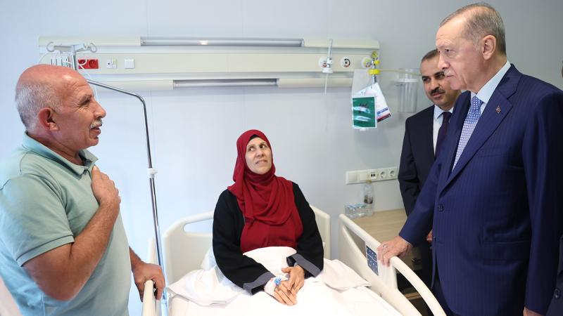

Gazze'den getirilen hastalardan Erdoğan'a teşekkür
Gazze'den Türkiye'ye getirilerek Ankara Bilkent Şehir Hastanesinde tedavi altına alınan Filistinli kanser
hastaları ve
refakatçileri, kendilerini ziyaret eden Cumhurbaşkanı Recep Tayyip Erdoğan'a teşekkür etti.

AK Parti Sözcüsü Çelik: Netanyahu ve benzerleri katliam siyasetinin takipçileridir
AK Parti Sözcüsü Ömer Çelik, İsrail Başbakanı Binyamin Netanyahu ve İsrail Dışişleri Bakanı Eli Cohen'in
Cumhurbaşkanı
Recep Tayyip Erdoğan hakkındaki açıklamalarına ilişkin, "Eli kanlı İsrail yönetiminin hezeyanları bir
gün mutlaka hesap
verecekleri suçlarını örtbas etme çabasıdır." ifadesini kullandı.